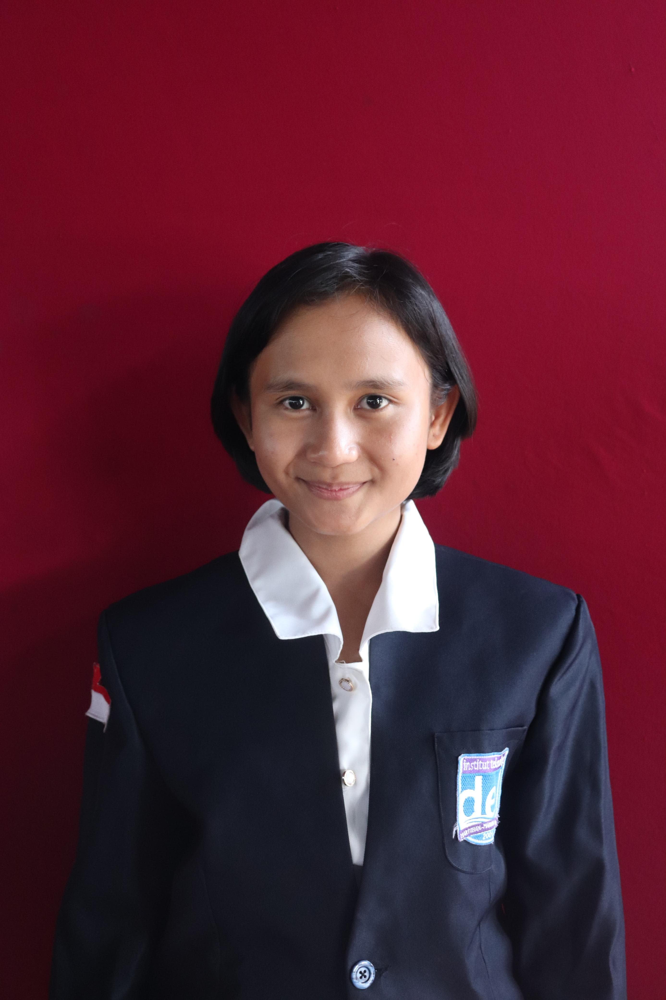
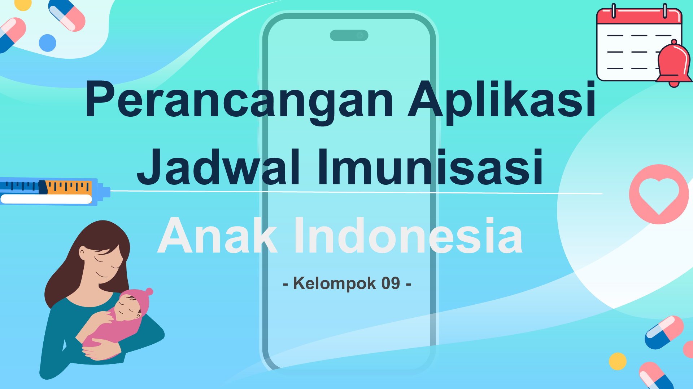
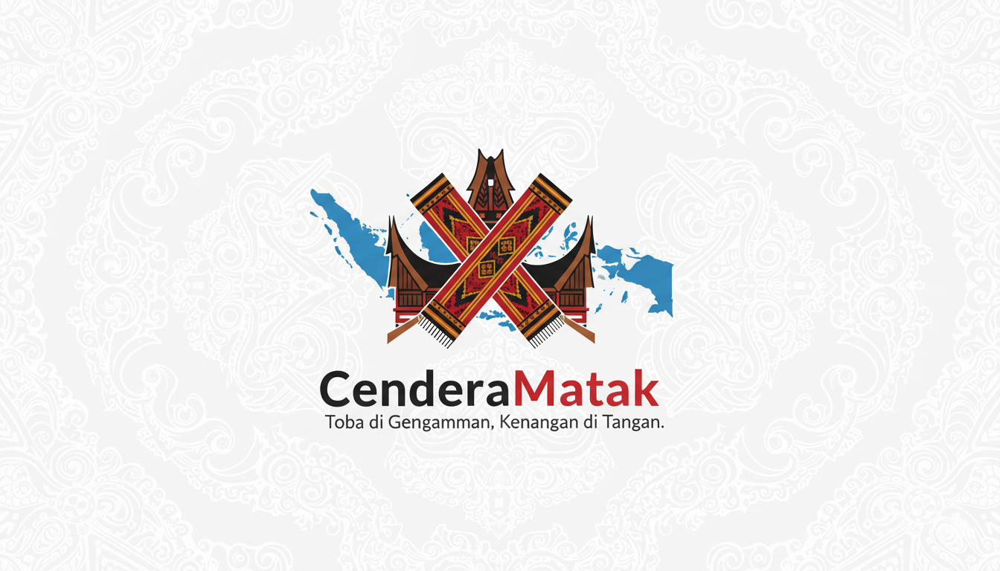
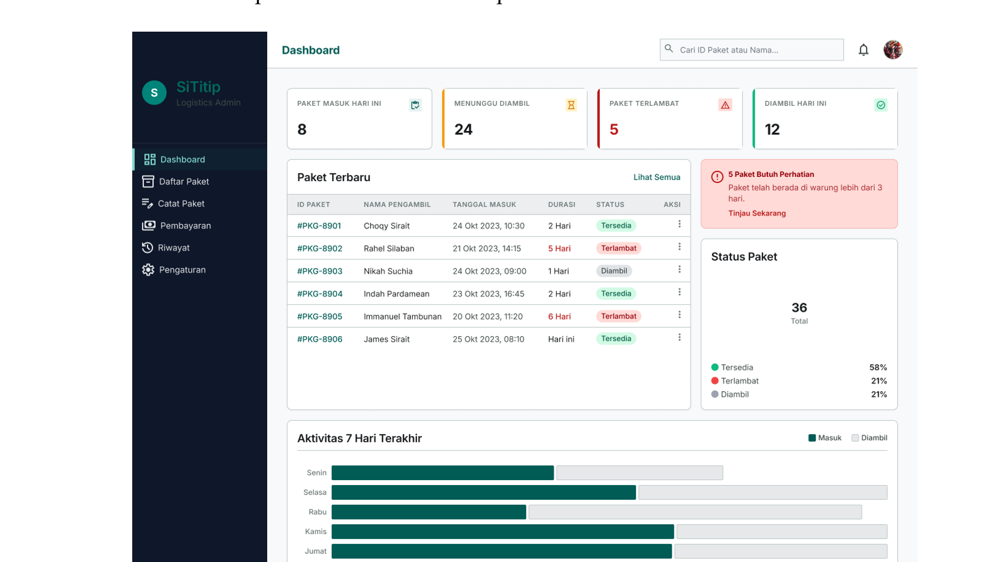
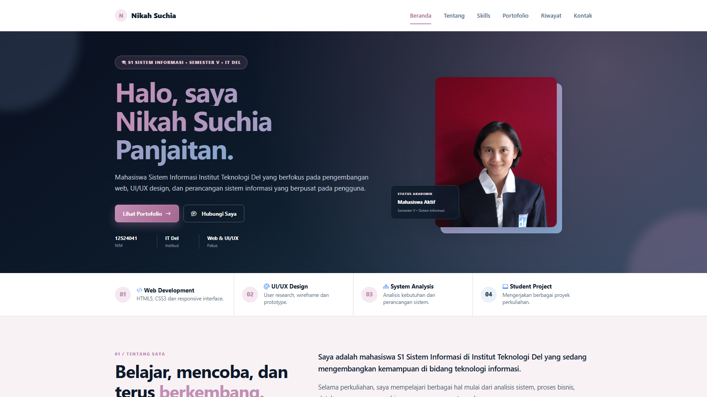

Web Development
HTML5, CSS3 dan responsive interface.
Mahasiswa Sistem Informasi Institut Teknologi Del yang berfokus pada pengembangan web, UI/UX design, dan perancangan sistem informasi yang berpusat pada pengguna.

HTML5, CSS3 dan responsive interface.
User research, wireframe dan prototype.
Analisis kebutuhan dan perancangan sistem.
Mengerjakan berbagai proyek perkuliahan.
Mengenal sedikit tentang latar belakang dan ketertarikan saya sebagai mahasiswa Sistem Informasi di Institut Teknologi Del.
Saya adalah mahasiswa S1 Sistem Informasi di Institut Teknologi Del yang sedang mengembangkan kemampuan di bidang teknologi informasi.
Selama perkuliahan, saya mempelajari berbagai hal mulai dari analisis sistem, proses bisnis, database, pemrograman, hingga perancangan antarmuka.
Saat ini saya memiliki ketertarikan khusus pada pengembangan web, UI/UX Design, serta bagaimana sebuah sistem dapat dirancang agar mudah digunakan oleh pengguna.
Beberapa kemampuan yang diperoleh melalui pembelajaran dan proyek perkuliahan di Institut Teknologi Del.
Konstruksi kode semantik dan tata letak responsif untuk antarmuka web modern.
Semantic Web
Responsive Design
Perancangan pengalaman pengguna, wireframe, dan prototype interaktif teruji.
User Interface
Prototyping
Elisitasi kebutuhan sistem, pemodelan data relasional, dan kontrol versi.
Requirement Analysis
Database Fundamentals
Version Control
Beberapa proyek yang dikerjakan dalam kegiatan perkuliahan.

Studi kasus komprehensif TEMANI (Teman Imunisasi): perancangan aplikasi mobile berbasis Design Thinking untuk menjawab kesenjangan 35,8% cakupan imunisasi dasar lengkap dan risiko 1,35 juta anak tanpa vaksin di Indonesia.

Perencanaan bisnis platform multi-sided digital untuk merevolusi belanja oleh-oleh khas Batak di Danau Toba via integrasi QR Code & QRIS di mitra homestay, kurasi produk UMKM, dan layanan Personal Assistance.

Spesifikasi kebutuhan sistem (SyRS) SiTitip untuk mendigitalisasi operasional penitipan paket di UMKM sekitar kampus IT Del (Warung Anugerah), memangkas service time dari 15m 40s via auto-generate ID unik dan notifikasi WhatsApp.

Website portfolio pribadi yang dikembangkan untuk menampilkan profil, kemampuan, pengalaman akademik, dan proyek perkuliahan dalam tampilan web yang responsif dan terstruktur.
Beberapa mata kuliah dan fokus pembelajaran selama perkuliahan.
| Semester | Mata Kuliah | Fokus | Status |
|---|---|---|---|
| III | Algoritma dan Struktur Data | Pemrograman dan struktur data | Selesai |
| III | Manajemen Proses Bisnis | Analisis proses bisnis | Selesai |
| IV | Pemrograman Berorientasi Objek | Pemrograman Java | Selesai |
| IV | Analisis dan Perancangan Sistem | Perancangan sistem informasi | Selesai |
| V | Pemrograman dan Pengujian Aplikasi Web | HTML, CSS dan Web Development | Sedang Dipelajari |
| Data ditampilkan sebagai bagian dari portfolio akademik. | |||
Layanan ini merupakan simulasi antarmuka untuk kebutuhan tugas praktikum dan konsultasi akademik.
Mengirimkan detail kebutuhan melalui formulir.
Menentukan kategori dan jenis konsultasi.
Melakukan diskusi sesuai kebutuhan.
Menyusun hasil atau rekomendasi dari diskusi.
Fokus pembelajaran akademik dan pengembangan antarmuka terstruktur bagi mahasiswa S1 Sistem Informasi.